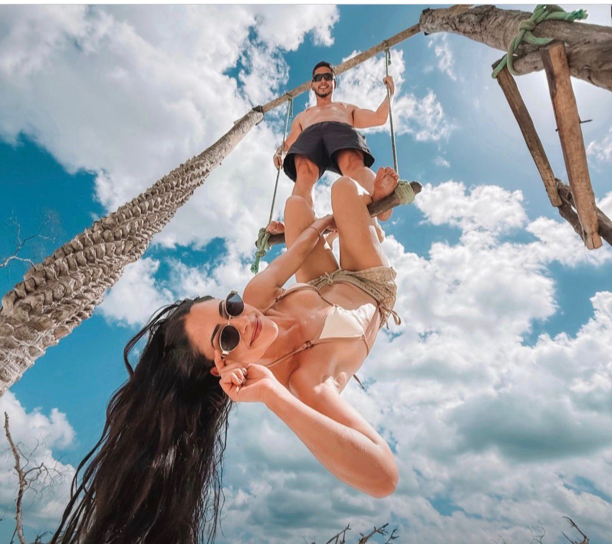
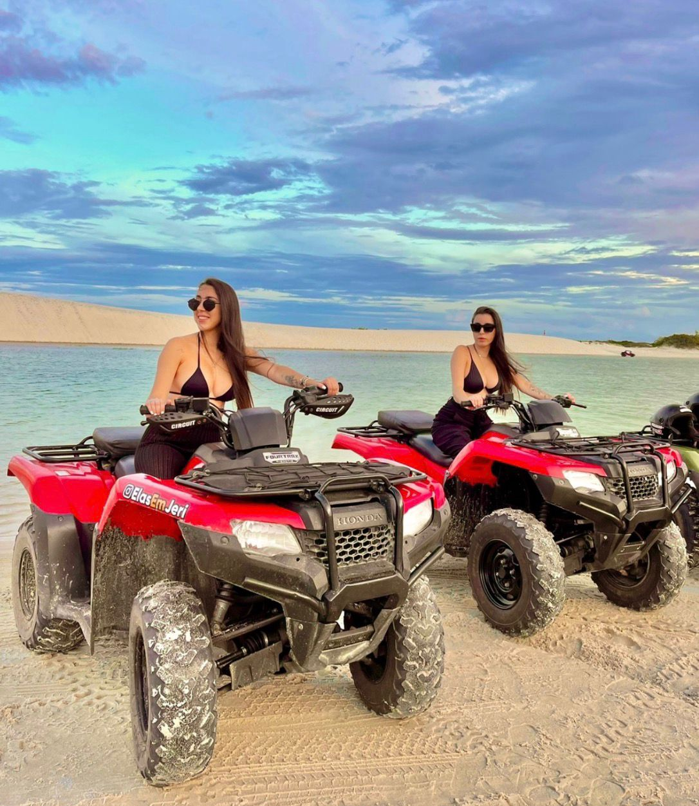
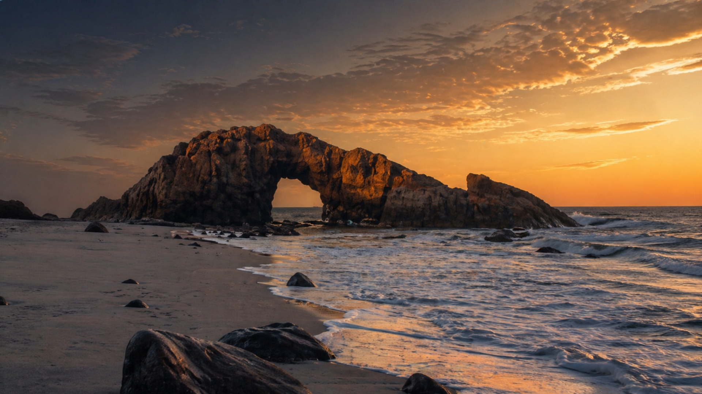
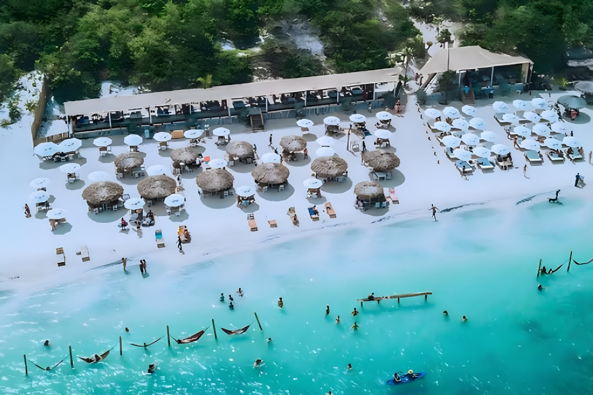
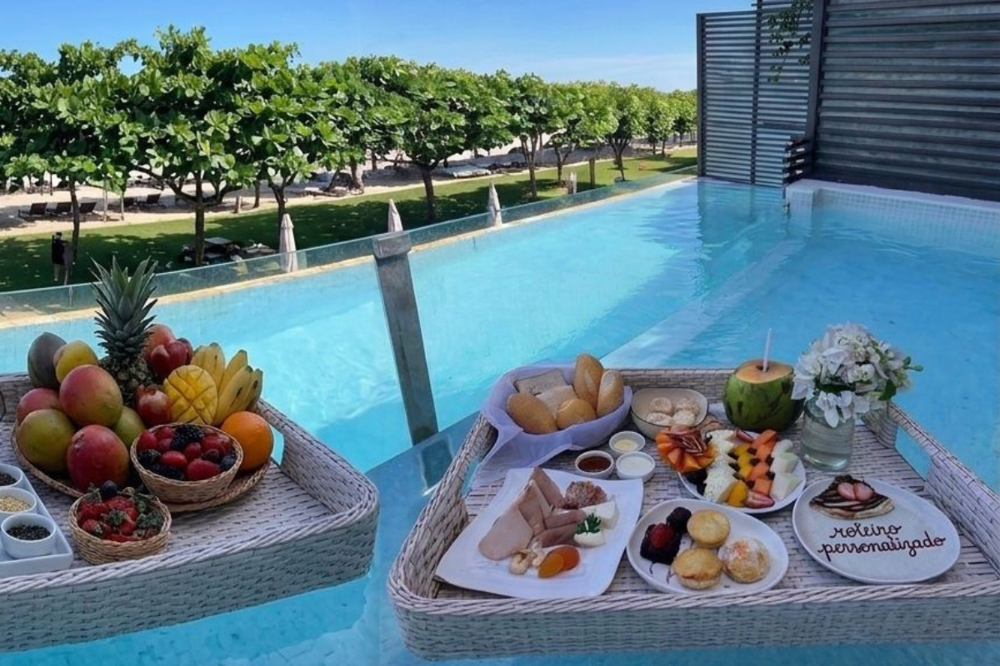
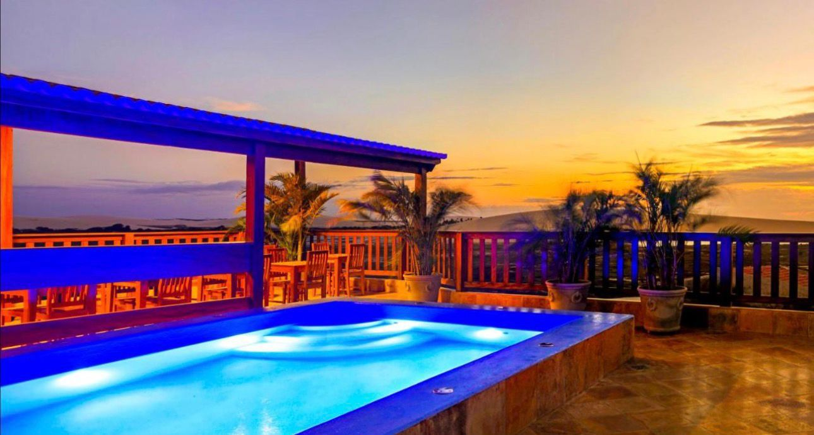
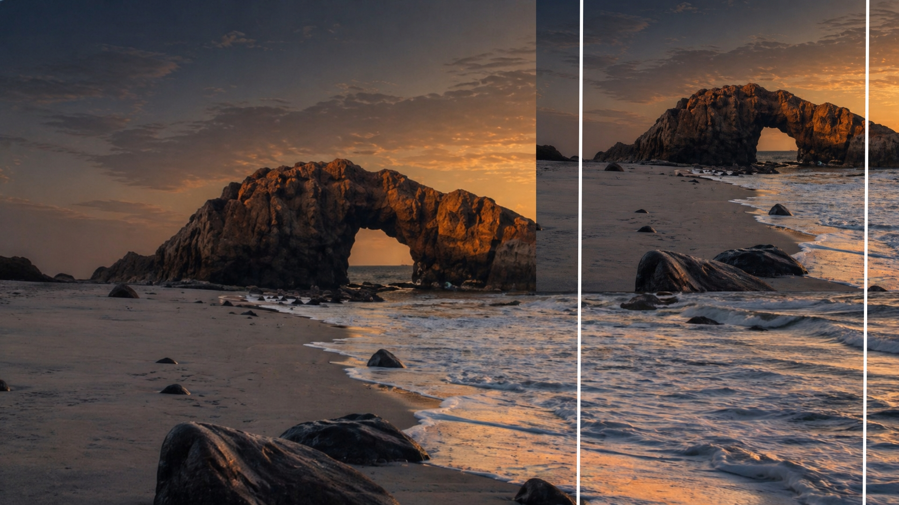

A equipe confirma pontos de encontro, duração aproximada e perfil do passeio antes do embarque.

Passeios em Jericoacoara
Roteiros para viver Jeri no ritmo certo
Escolha entre os clássicos do litoral leste e oeste, experiências de quadriciclo, Pedra Furada, bate e volta e passeios sob medida com orientação da equipe local.
Paradas pensadas para aproveitar lagoas, dunas, paisagens e restaurantes sem correria desnecessária.
Você fala direto com a equipe para combinar data, grupo, preferências e melhor formato.
Roteiros
Escolha o passeio que combina com seu dia
As opções abaixo são uma base para começar a conversa. A equipe confirma disponibilidade, valores e detalhes conforme data, quantidade de pessoas e preferências.

Litoral Leste
Lagoas, dunas e descanso
Roteiro para quem quer curtir paisagens clássicas, lagoas transparentes e paradas com estrutura para aproveitar com calma.
- Lagoas e pontos panorâmicos
- Paradas para fotos e banho
- Bom para casal, família e grupo

Litoral Oeste
Mangue, dunas e aventura
Um dia mais cênico, com travessias, dunas e paradas que mostram outro lado da região de Jericoacoara.
- Roteiro intenso e fotogênico
- Paradas com paisagens variadas
- Ideal para primeira viagem a Jeri

Quadriciclo
Roteiro com mais liberdade
Experiência para quem quer sentir o caminho, passar por trilhas de areia e fazer um passeio com mais movimento.
- Boa opção para casais e amigos
- Roteiro definido com orientação
- Paradas combinadas antes da saída

Pedra Furada
O cartão-postal de Jeri
Uma experiência para visitar um dos símbolos de Jericoacoara com orientação sobre melhor horário e acesso.
- Paisagem clássica da vila
- Boa escolha para fotos
- Horário ajustado ao clima e maré

Bate e volta
Jeri em um dia bem planejado
Para quem tem pouco tempo e quer organizar chegada, passeio e retorno com clareza antes de sair.
- Roteiro objetivo
- Combinação com transfer
- Indicado para agendas curtas

Personalizado
Um roteiro do seu jeito
Para quem quer combinar passeio, transfer, pousada, horários e preferências em uma mesma conversa.
- Indicado para grupos e famílias
- Paradas escolhidas com a equipe
- Planejamento mais flexível

Como funciona
Você fala o que quer viver, a equipe orienta o melhor caminho
Antes do passeio, a Jeri Rota ajuda a entender qual roteiro faz mais sentido para sua data, seu grupo e o tempo disponível. Depois, tudo segue combinado pelo WhatsApp: encontro, horário, paradas e detalhes importantes.
- Envie data, quantidade de pessoas e tipo de passeio.
- Receba a melhor opção para o seu perfil.
- Confirme os detalhes e aproveite Jeri sem improviso.
Cenários
Lagoas, areia, vento e pôr do sol



Planeje seu dia
Falar com a Jeri Rota
Vamos escolher seus passeios em Jericoacoara?
Conte a data da viagem, quantas pessoas vão com você e quais experiências chamaram sua atenção.